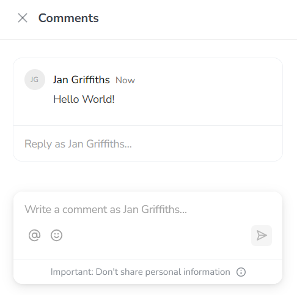
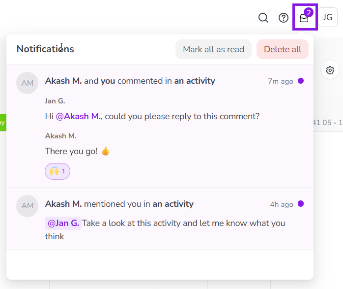

Comment on activities
You can use activity comments to discuss activities with other members of your team, and to record updates, changes, and decisions (such as approvals) on activities. Because comments are visible to all users who have access to an activity, they're a great way to provide insight to all stakeholders as you plan, approve, and execute activities.
Activity comments are available on activities of all types. They are displayed in their own Comments panel alongside an activity's details panel. With activity comments, you can:
Add comments to an activity that are visible to all other users who have view access to that activity
Organize related comments into conversations with comment threads
@mention any user to notify them about your comment
Use emoji in comment text, or as reactions to comments
View an activity's comments
If you have at least view access to an activity, you can access that activity's comments at any time from its details panel.
In the
 Activities section, find the activity whose comments you want to view. Click on it to open its details panel.
Activities section, find the activity whose comments you want to view. Click on it to open its details panel.You can do this in both the Timeline and Summary display modes.
In the activity's details panel, click Open Comments.
The Comments panel opens, displaying any existing comments on the activity.
Add a comment to an activity
You can add comments to any activity to which you have at least view access.
Click Open Comments in the details panel of the activity where you want to add a comment. The Comments panel opens.
To add a new comment, type your comment into the Write a comment as... field, then click Add Comment (or press the Enter key) to publish your comment:

Your comment is added to the activity's Comments panel.
Edit or delete a comment
If you need to make changes to a comment you added previously, or if you want to delete a comment, you can do so at any time.
Click Open Comments in the details panel of the activity where you want to edit or delete a comment. The Comments panel opens.
Hold the pointer over the comment you want to edit or delete, and click More:
To edit the comment: Click
 Edit comment, then make your changes in the comment field. Click Save (or press the Enter key) to save your changes.
Edit comment, then make your changes in the comment field. Click Save (or press the Enter key) to save your changes.To delete the comment: Click
 Delete comment. The comment is deleted immediately.
Delete comment. The comment is deleted immediately.
Manage comment notifications
If someone @mentions you on a comment, or replies to a comment thread that you're part of, you'll receive a notification. Notifications are displayed at the top of the  Activities section. A counter badge is displayed if you have unread notifications.
Activities section. A counter badge is displayed if you have unread notifications.
Click Notifications to view your comment notifications:

Click a notification to open the Comments panel of the relevant activity.
Hold the pointer over a notification and click More to:
Mark the notification as read
Unsubscribe from further notifications about the comment thread
Delete the notification